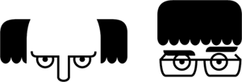

<!doctype html>
<html lang='en-GB'>
<head>
  <meta charset='utf-8'>
  <meta name="viewport" content="width=device-width">
  <title>Bugle search</title>
  <style>
    #header {
      background-color: #F1582C;
      border-bottom: 1px solid #888888;
      height: 66px;
      left: 0px;
      position: fixed;
      top: 0px;
      width: 720px;
    }

    body {
      color: #444444;
      font-family: Arial;
      font-size: 16px;
      padding: 0px;
      padding-top: 66px;
    }
    
    #handle {
      color: #FFFFFF;
      position: absolute;
      right: 56px;
      text-decoration: none;
      top: 23px;
    }
    
    html {
      width: 720px;
    }

    input {
      font-size: 16px;
      left: 150px;
      position: absolute;
      top: 21px;
      width: 300px;
    }

    #johnandy {
      height: 34px;
      left: 16px;
      top: 16px;
      position: absolute;
      width: 100px;
    }

    .marker {
      border-bottom: 1px solid #DDDDDD;
      padding: 16px 16px 0px 16px;
    }
    
    #twitter {
      height: 34px;
      top: 16px;
      position: absolute;
      right: 16px;
      width: 34px;
    }
  </style>
</head>

<body>
  <div id='container'></div>

  <script id='template' type='text/ractive'>
    <div id="header">
      
      <input id="txtFind" type="text" value="{{find}}" />
      
      <a id="handle" href="https://twitter.com/rodinhart" target="_blank">@rodinhart</a>
    </div>
    {{#each markers}}
    <div class="marker">
    <b>Bugle {{code}}</b> {{min}}m {{sec}}s
    <p>{{text}}</p>
    </div>
    {{/each}}
  </script>

  <script src="http://cdn.ractivejs.org/latest/ractive.min.js"></script>
  <script src="./lunr.min.js"></script>
  <script src="./bugleApp_bundle.js"></script>

  <script>
    var bugles = require('bugles');

    var code, index, lookup, markers, ractive;

    index = lunr(function() {
      this.field('text');
      this.ref('id');
    });

    markers = [];
    lookup = {};
    for (code in bugles) {
      bugles[code].markers.forEach(function(marker) {
        var t;

        t = {
          id: [code, marker.min, marker.sec].join('|'),
          code: code,
          min: marker.min,
          sec: marker.sec,
          text: marker.text
        };

        markers.push(t);

        lookup[t.id] = t;
        index.add(t);
      });
    }

    ractive = new Ractive({
      // The `el` option can be a node, an ID, or a CSS selector.
      el: '#container',

      // We could pass in a string, but for the sake of convenience
      // we're passing the ID of the <script> tag above.
      template: '#template',

      // Here, we're passing in some initial data
      data: {
        markers: markers
      }
    });

    ractive.observe('find', function(val, prev) { // vscroll = 0
      window.scrollTo(0, 0);
      if (val) {
        ractive.set('markers', index.search(val).map(function(t) {
          return lookup[t.ref];
        }));
      } else {
        ractive.set('markers', markers);
      }
    });

    document.getElementById('txtFind').focus();
  </script>
</body>
</html>
